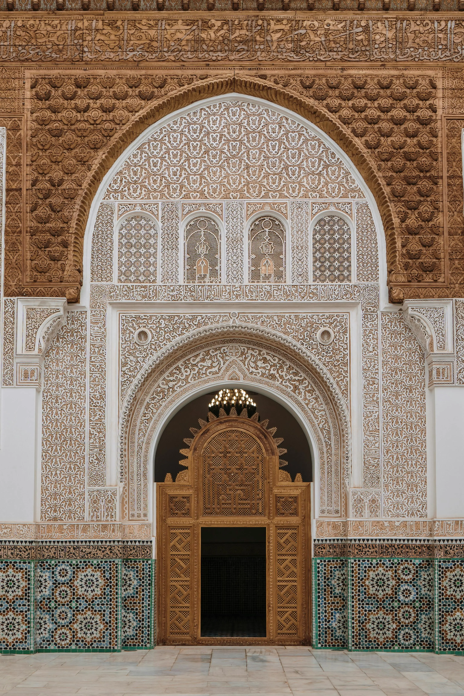

Marrakech Travel Guide
Practical advice, local stories and thoughtful recommendations to help you experience Marrakech beyond the usual highlights.
Explore the guides
Get to know the Red City, one story at a time.
From the winding lanes of the Medina to the food stalls, craft workshops and landscapes beyond the city, these guides bring together useful travel information and first-hand local insight. Browse by topic, plan your days and find experiences that suit the way you like to travel.
Browse the guides
Clear, practical answers to the questions travellers ask before and during a visit.

Things to Do in Marrakech: 12 Experiences Worth Your Time
A local guide to Marrakech’s essential sights, gardens, souks, food and memorable experiences.
Read guide
Marrakech Medina Guide: What to See, How to Explore and Local Tips
Understand the old city, its main sights, neighbourhoods and how to enjoy exploring the Marrakech Medina.
Read guide
Marrakech Souks: A Local Guide to Markets, Crafts and Shopping
Explore the Marrakech souks, discover traditional crafts and shop with confidence using practical local advice.
Read guideIs Marrakech Safe? Practical Advice for First-Time Visitors
A balanced local perspective on safety, navigating the medina, taxis, shopping and common-sense precautions in Marrakech.
Read guide
Best Time to Visit Marrakech: Weather, Seasons and What to Expect
A simple seasonal guide to choosing when to visit Marrakech, from spring and autumn to the hot summer and cooler winter.
Read guideDay Trips from Marrakech: Atlas Mountains, Agafay and the Coast
Compare popular day trips from Marrakech, including the Atlas Mountains, Ourika Valley, Agafay Desert and Essaouira.
Read guide
What to Eat in Marrakech: Moroccan Dishes and Street Food to Try
A local introduction to Moroccan food in Marrakech, from tagine and couscous to harira, pastilla, msemen and street food.
Read guide
Marrakech Itinerary: How to Spend 3 Days in the Red City
A relaxed three-day Marrakech itinerary covering the Medina, historic monuments, gardens, food and a possible day trip.
Read guide
Advice from someone who calls Marrakech home.
I'm Chafik, a licensed professional tour guide in Morocco since 2018. I created these guides to share the city’s history, traditions and everyday life, and to help visitors make informed choices during their stay.
Meet your local guide →See more of Marrakech with a local.
Whether you are interested in the historic Medina, traditional crafts or Moroccan food, we can help you find the right experience.
Explore Guided ToursPlan your visit with us